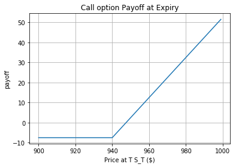

| Contract Name | Type | Expire Date | Strike | Premium |
|---|---|---|---|---|
| GOOG170714C00940000 | Call | 07/14/2017 | $ 940 | $7.5 |
| GOOG170714P00960000 | Put | 07/14/2017 | $960 | $19.5 |
import matplotlib.pyplot as plt
%pylab inline
price = np.arange(900,1000,1)
strike = 940
premium = 7.5
payoff = [max(-premium, i - strike-premium) for i in price]
plt.plot(price, payoff)
plt.xlabel('Price at T S_T ($)')
plt.ylabel('payoff')
plt.title('Call option Payoff at Expiry')
plt.grid(True)
price = np.arange(900,1000,1)
strike = 960
premium = 19.5
payoff = [max(-premium, strike - i -premium) for i in price]
plt.plot(price, payoff)
plt.xlabel('Price at T S_T ($)')
plt.ylabel('payoff')
plt.title('Put option Payoff at Expiry')
plt.grid(True)
  The above payoff diagrams illustrate the cash payoff on an option at the expiration date. For a call option, the net payoff is negative if the price of the underlying asset is less than the strike price(The negative payoff comes from the premium). If the underlying price exceeds the strike price, the gross payoff is the price of the underlying asset minus the strike price and the premium. For a put option, the net payoff is positive if the underlying price is less than the strike price. If the price of the underlying asset exceeds the strike price, the gross payoff is negative because you pay premuim for purchasing the contracts.
The above payoff diagrams illustrate the cash payoff on an option at the expiration date. For a call option, the net payoff is negative if the price of the underlying asset is less than the strike price(The negative payoff comes from the premium). If the underlying price exceeds the strike price, the gross payoff is the price of the underlying asset minus the strike price and the premium. For a put option, the net payoff is positive if the underlying price is less than the strike price. If the price of the underlying asset exceeds the strike price, the gross payoff is negative because you pay premuim for purchasing the contracts.
| Payoff | \(S_t > K\) | \(S_t < K\) |
| Portfolio A | \(S_t - K+K=S_t\) | \(0+K=K\) |
| Portfolio B | \(0+S_t =S_t\) | \(K-S_t+S_t=K\) |
| Strategy | Content |
| Conversion | Synthetic Short Position: short call + long put The actual stock position: long the underlying stocks |
| Reversal | Synthetic Long Position: long call + short put The actual stock position: short the underlying stocks |